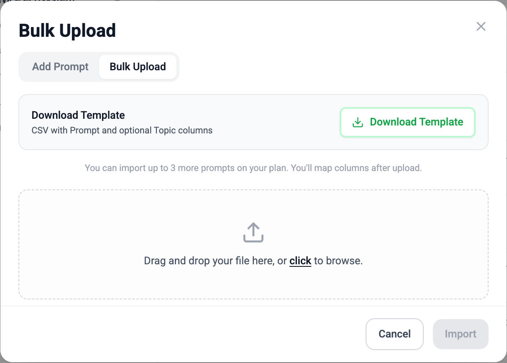
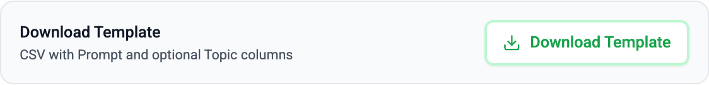
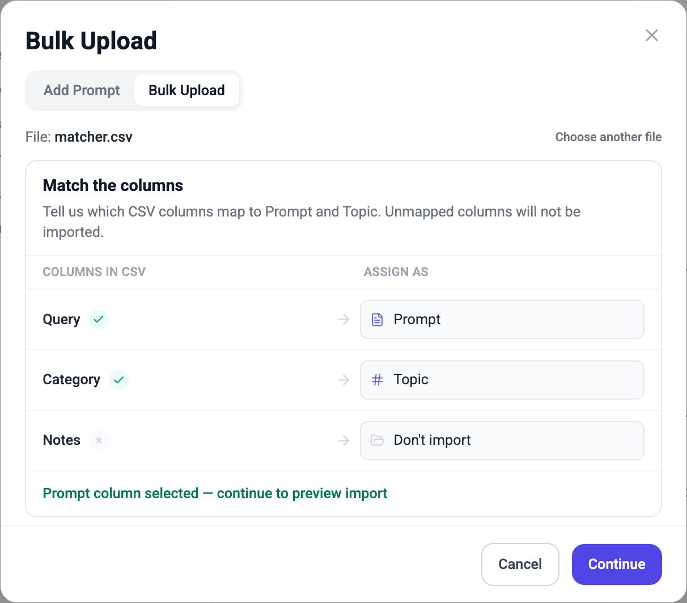
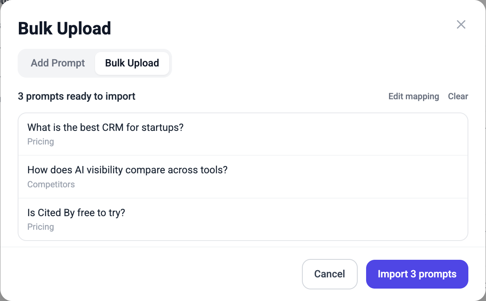
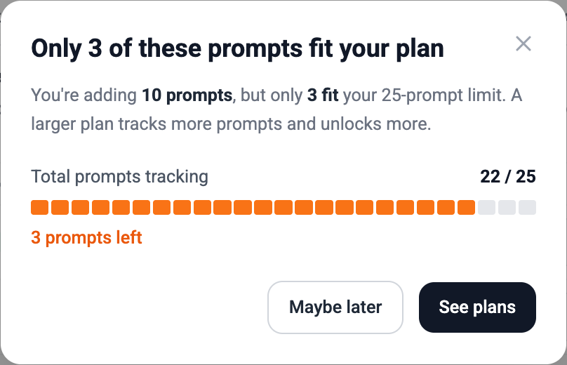

Bulk import
Add many prompts at once from a CSV into your Cited By (AI Visibility) prompt library — including topics, column matching, preview, and plan limits.
Overview
Bulk import lets you upload a spreadsheet of prompts instead of adding them one by one. Each row becomes a prompt in your library; an optional topic column groups prompts into folders.
The flow has four steps:
- Open Bulk Upload and (optionally) download the template.
- Upload your CSV (drag and drop or file picker).
- Match columns — map headers to Prompt, Topic, or Don’t import.
- Preview the rows, then Import.
Bulk import only adds prompts to your active library. It does not create Suggested or Archived prompts.
Open Bulk Upload
- In ThriveStack, go to AI Visibility → Prompts.
- Click Add prompt (or the equivalent add action on the Prompts tab).
- In the modal, switch to the Bulk Upload tab.

Download the template
On the Bulk Upload tab, download the CSV template. It includes a header row and example prompts so you can see the expected shape. You can also download the same file here:
The template file is named ai-visibility-prompts-bulk-import-template.csv and uses these headers:
| Column | Required? | Description |
|---|---|---|
Prompt |
Yes | The question or query sent to AI answer engines. |
Topic |
No | Folder name in your prompt library. Leave blank to use No Topic. |
Replace the example rows with your own prompts before importing. You can keep the same headers or use supported aliases (see below).

CSV format
Delimiters
Both comma (,) and semicolon (;) separated files are supported.
Quoted cells work as usual — for example, a prompt that contains a comma should be wrapped in double quotes.
Header aliases
If you already have a spreadsheet from another tool, you often don’t need to rename headers. On upload, Cited By auto-suggests mappings for these names (case-insensitive):
- Prompt:
Prompt,Prompts,Query,Queries - Topic:
Topic,Topics
Any other column (for example Notes, Priority, or Owner) defaults to
Don’t import. You can still map it manually in the matcher if needed.
Example
Prompt,Topic
"What is the best CRM for startups?",Pricing
"How does ThriveStack compare to HubSpot?",Competitors
"AI visibility tools for B2B SaaS",
Is Cited By free to try?,PricingIn this example, the third row has an empty topic and lands in No Topic. Existing topic names reuse those folders; new names create new topics when you import.
Upload your file
- On the Bulk Upload tab, drag a
.csvfile onto the drop zone, or click to choose a file. - Cited By reads the headers and opens the Match the columns step.
If the file can’t be parsed (empty file, missing header row, or invalid CSV), you’ll see an error and stay on the upload step. Fix the file and try again, or use Remove / change file to start over.
Match the columns
After a successful upload, every CSV header appears in the matcher. For each column, choose one of:
- Prompt — required. Exactly one column must be mapped to Prompt.
- Topic — optional. At most one column may be mapped to Topic.
- Don’t import — skip this column entirely.
Known aliases are pre-selected for you. Review the mapping before continuing — especially if your headers are custom names
(for example map Question → Prompt yourself; that name is not auto-detected).
You can’t continue until a Prompt column is selected. Mapping two columns to Prompt (or two to Topic) isn’t allowed — picking a field on one column clears it from the other.

When the mapping looks right, click Continue (or the equivalent primary action) to build the preview.
Preview and import
The preview lists the prompts that will be created (text + topic). From here you can go back to fix column mapping, clear the file and start over, or confirm the import.

What gets skipped
- Empty prompt text — rows with a blank Prompt cell are dropped.
- Duplicates inside the CSV — later rows with the same prompt text (case-insensitive) are dropped.
- Already in your library — prompts that already exist in the active library are skipped and do not consume entitlement slots. The UI shows how many were skipped.
Click the import action (for example Import N prompts) to save. New topics are created as needed; blank topics go to No Topic.
Plan limits
Prompts use your account’s prompt entitlement. You can only import as many new prompts as you have remaining slots.
- If the preview count is within remaining slots, import proceeds.
- If the CSV (after skipping duplicates already in the library) still has more rows than you have room for, import is blocked. You are not partially imported up to the limit.
- Use the limit dialog to upgrade your plan or buy a prompt add-on, then try again with a smaller file or more capacity.

After import
Imported prompts appear under their topics on the Prompts tab, ready to track like any other library prompt. Check the entitlement gauge if you want to confirm how many slots were used.
Troubleshooting
| Issue | What to try |
|---|---|
| Can’t continue past Match columns | Map exactly one column to Prompt. |
| Headers not auto-detected | Use the matcher to assign fields, or rename headers to supported aliases / the template names. |
| Fewer prompts than CSV rows | Empty cells, in-file duplicates, and prompts already in the library are skipped. |
| Import blocked by plan limit | Reduce the file, remove prompts already tracked elsewhere, or upgrade / buy add-on capacity. |
| Topics look wrong | Confirm the Topic column mapping, and that blank cells should go to No Topic. |